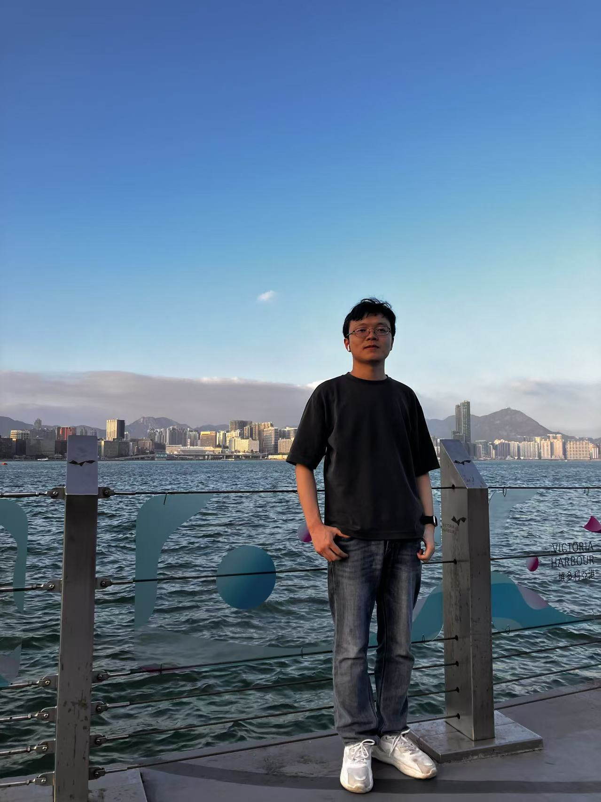
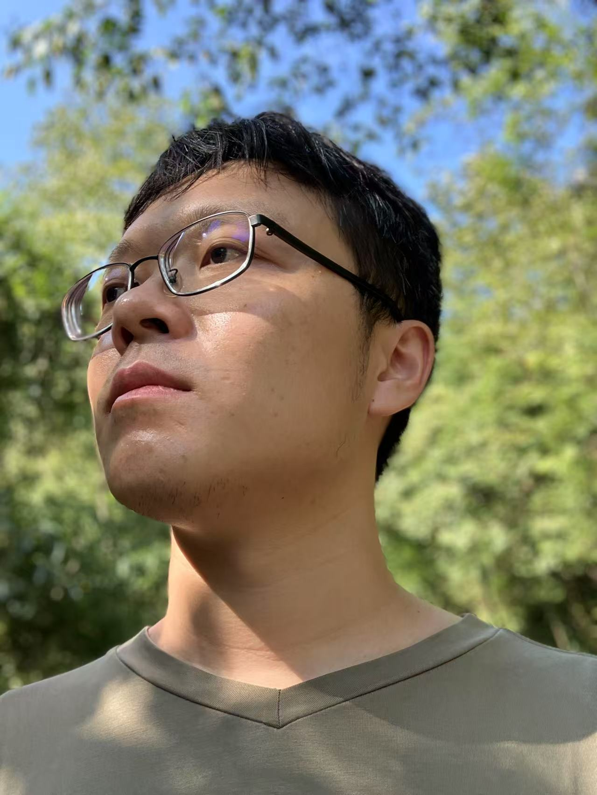
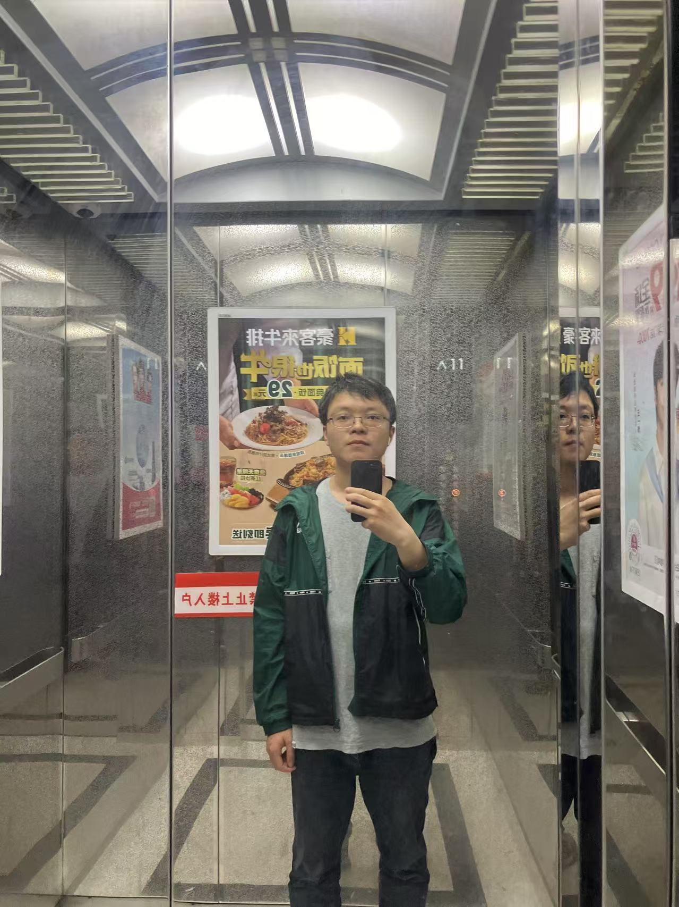
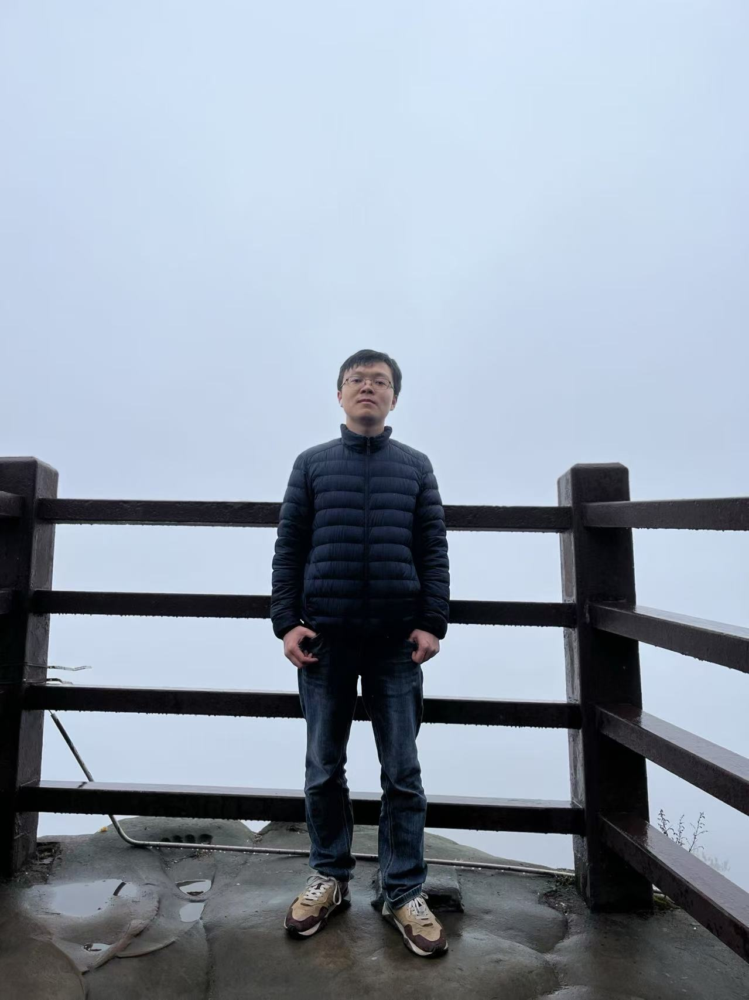

个人信息：
自我介绍：
本科毕业，在互联网公司从事程序员工作。 性格 INFP，不善社交，典型的理工男。不吸烟，不喝酒，不赌博，无其他不良嗜好，平时工作两点一线。现居重庆江北区，无车房，希望等房价在合理的区间再买（租售比 < 300, 售租比 > 3%）。由于个人没有把情感问题放在心上，一直搁置，父母操心，现在年龄已大，不想在最好的时间错过生命中最重要的她。
兴趣爱好：
游戏，看书，电影，徒步，爬山
对另一半的期望：
善良，正直，三观合得来，会独立思考，有阅读习惯，不喜欢刷短视频，相处合拍，成为彼此最信任的人。
感情观：
不接受闪婚，人生三个重大决定：在哪里生活，和谁在一起，从事什么职业。“和谁在一起” 是一个负责且重要的决定，在重大的问题上需要多花点时间。我期待能遇到有缘人，与她共度一生。
 
 